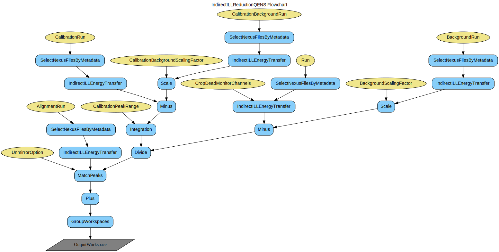

\(\renewcommand\AA{\unicode{x212B}}\)
IndirectILLReductionQENS v1¶
{kind=link}
IndirectILLReductionQENS dialog.¶
Summary¶
Performs quasi-elastic neutron scattering (QENS) multiple file reduction for ILL indirect geometry data, instrument IN16B.
See Also¶
Properties¶
Name |
Direction |
Type |
Default |
Description |
|---|---|---|---|---|
Run |
Input |
list of str lists |
Mandatory |
Run number(s) of sample run(s). Allowed values: [‘nxs’] |
BackgroundRun |
Input |
list of str lists |
Run number(s) of background (empty can) run(s). Allowed values: [‘nxs’] |
|
CalibrationRun |
Input |
list of str lists |
Run number(s) of vanadium calibration run(s). Allowed values: [‘nxs’] |
|
CalibrationBackgroundRun |
Input |
list of str lists |
Run number(s) of background (empty can) run(s) for vanadium run. Allowed values: [‘nxs’] |
|
AlignmentRun |
Input |
list of str lists |
Run number(s) of vanadium run(s) used for peak alignment for UnmirrorOption=[5, 7]. Allowed values: [‘nxs’] |
|
SumRuns |
Input |
boolean |
False |
Whether to sum all the input runs. |
CropDeadMonitorChannels |
Input |
boolean |
False |
Whether or not to exclude the first and last few channels with 0 monitor count in the energy transfer formula. |
UnmirrorOption |
Input |
number |
6 |
Unmirroring options : 0 no unmirroring 1 sum of left and right 2 left 3 right 4 shift right according to left and sum 5 like 4, but use alignment run for peak positions 6 center both left and right at zero and sum 7 like 6, but use alignment run for peak positions |
BackgroundScalingFactor |
Input |
number |
1 |
Scaling factor for background subtraction |
CalibrationBackgroundScalingFactor |
Input |
number |
1 |
Scaling factor for background subtraction for vanadium calibration |
CalibrationPeakRange |
Input |
dbl list |
-0.003,0.003 |
Peak range for integration over calibration file peak (in mev) |
MapFile |
Input |
string |
Filename of the detector grouping map file to use. By default all the pixels will be summed per each tube. Use .map or .xml file (see GroupDetectors documentation) only if different range is needed for each tube. Allowed values: [‘map’, ‘xml’] |
|
ManualPSDIntegrationRange |
Input |
long list |
1,128 |
Integration range of vertical pixels in each PSD tube. By default all the pixels will be summed per each tube. Use this option if the same range (other than default) is needed for all the tubes. |
Analyser |
Input |
string |
silicon |
Analyser crystal. Allowed values: [‘silicon’] |
Reflection |
Input |
string |
111 |
Analyser reflection. Allowed values: [‘111’, ‘311’] |
OutputWorkspace |
Output |
WorkspaceGroup |
Mandatory |
Group name for the reduced workspace(s). |
SpectrumAxis |
Input |
string |
SpectrumNumber |
The spectrum axis conversion target. Allowed values: [‘SpectrumNumber’, ‘2Theta’, ‘Q’, ‘Q2’] |
DiscardSingleDetectors |
Input |
boolean |
False |
Whether to discard the spectra of single detectors. |
GroupDetectors |
Input |
boolean |
True |
Group the pixels using the range, tube-by-tube (default) or in a custom way; it is not recommended to group the detectors at this stage, in order to get absorption corrections right, however the default value is True for backwards compatibility. |
Description¶
Performs a multiple-file QENS (Quasi-Elastic Neutron Scattering) data reduction for indirect geometry ILL instrument IN16B. It uses internally the IndirectILLEnergyTransfer algorithm.
Multiple File Reduction¶
The algorithm is capable of running over multiple files. Run property
needs to be specified following the syntax in MultipleFileProperty.
When SumRuns=True, all the runs will be merged while loading.
Note, for Range and Stepped Range, SumRuns will be
ignored. Use Added Range and Added Stepped Range instead (see
MultipleFileProperty). For BackgroundRun,
CalibrationRun, CalibrationBackgroundRun and AlignmentRun all the runs will be automatically summed.
Unmirror Options¶
IN16B can record data with mirror sense, where the spectra for the acceleration and
deceleration phase of the Doppler drive are recorded separately, or without.
Technically this is defined in the Doppler.mirror_sense entry in the sample logs.
For the data without mirror sense (i.e. mirror_sense = 16) only three unmirror options are valid:
0: No x-axis shift. (Options 0-5 will fall back to 0).
6: Centering the peaks at the zero energy transfer.
7: Centering the peaks using the corresponding vanadium alignment run.
For the data with mirror sense (i.e. mirror_sense = 14) there are 8 options available:
0: Left and right wings are returned separately.
1: Left and right wings will summed.
2: Left wing will be returned.
3: Right wing will be returned.
4: Peaks in the right wing will be positioned at peak positions in the left wing, and then they will be summed.
5: Right wing will be shifted according with the offsets of the peak positions in left and right wings in vanadium alignment run.
6: Peaks in both, left and right wings will be centered at zero energy transfer and then they will be summed.
7: Left and right wings will be shifted according to offsets of peak positions of left and right wings in corresponding vanadium alignment run.
Options 5 and 7 require the AlignmentRun (vanadium) to determine the peak positions to align with.
MatchPeaks algorithm is invoked for aligning the peaks with different options.
Note, that both detector calibration and background subtraction are performed wing-by-wing, i.e. unmirroring is the very final step.
Vanadium Calibration¶
Integration range can be specified to integrate over spectra in CalibrationRun. Note, that before integration, the spectra will be
centered at 0-energy transfer (see Unmirror Option 6 above) for the calibration run.
Output¶
A WorkspaceGroup will be returned, containing workspaces for each individual (unsummed) run.
Workflow¶
Usage¶
Example - IndirectILLReduction : default options
ws = IndirectILLReductionQENS(Run='ILL/IN16B/136553:136555.nxs')
print("Result is a WorkspaceGroup, that contains {:d} workspaces".format(ws.getNumberOfEntries()))
print("the name of the first one is {} corresponding to run 136553".format(ws.getItem(0).name()))
print("it has {:d} spectra and {:d} bins".format(ws.getItem(0).getNumberHistograms(),ws.getItem(0).blocksize()))
Output:
Result is a WorkspaceGroup, that contains 3 workspaces
the name of the first one is 136553_ws_red corresponding to run 136553
it has 18 spectra and 1024 bins
Categories: AlgorithmIndex | Workflow\MIDAS | Workflow\Inelastic | Inelastic\Indirect | Inelastic\Reduction | ILL\Indirect
Source¶
Python: IndirectILLReductionQENS.py